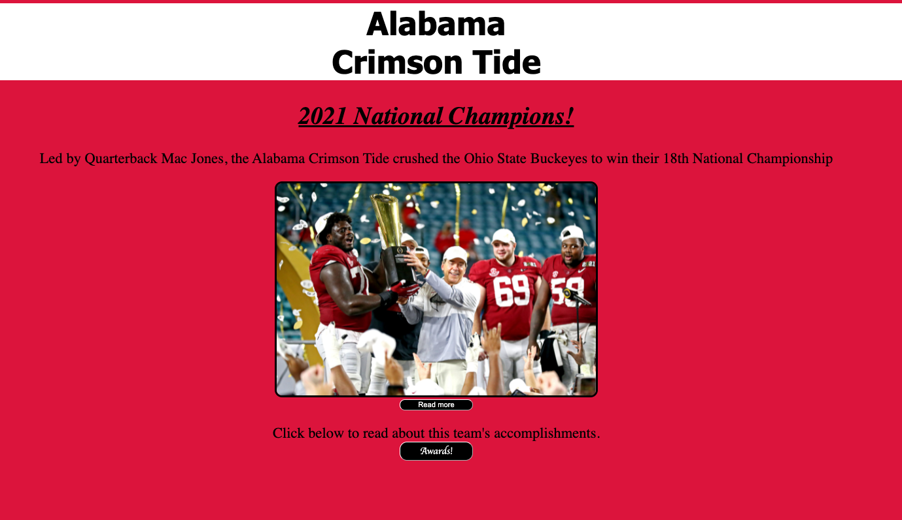
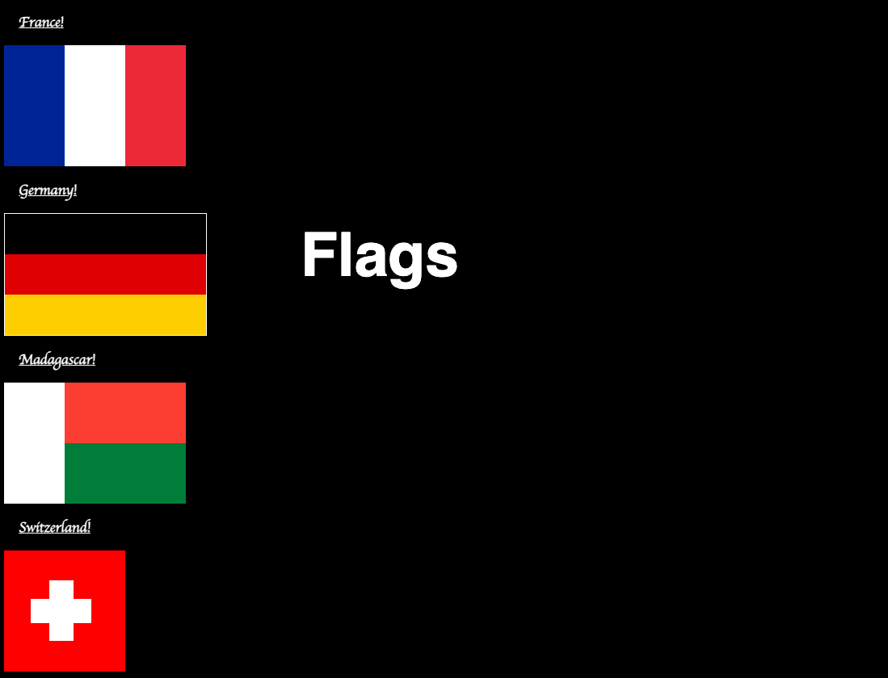

DaWeavs
Development
"Developin' Web Stuff!"
Welcome to DaWeavs Development. DWD is a web development company that develops stuff on the web. On this page you can see the projects that Noah has completed thus far. A click on the image will take you to the site that it represents. Click on the "About" button at the top of the screen to learn more about Noah Weaver and DaWeavs Development.

This site was created by Noah Weaver. The VSchool Precourse Project was a simple HTML site with CSS and JavaScript included. This is a small site dedicated to the success of the 2020 Alabama Crimson Tide. Click the image to view the image.

This site was created by Noah Weaver. This flagsite is a part of the VSchool curriculum. It allows the student to practice CSS. Most specifically is CSS layout and positioning.
Projects will be added as they are completed.